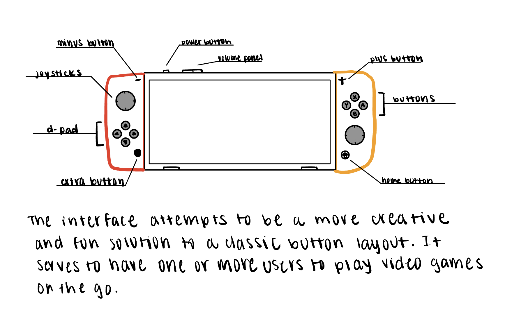

What are some expectations you have with using this interface?
Were those expectations changed in some way?
Did the interface pose any challenge in terms of how to figure out how to use the system?
Do you have any thoughts on the button layout?
There are three different configurations. how challenging was it to figure out?
Do you have experience with playing video games in the past?

Part II: Recording Observations
Objective Observations
User I: picks up switch, looks at the switch back, uses the power button, struggles a bit with the joystick, reads the instructions, follows the three button instructions, opens up smash. opens up the second profile, takes a little while to skip the introduction opening video, goes to controls, uses the L and R buttons and struggles a little bit, struggling to go back to main menu, presses the home screen button, sleep mode. inserts the switch into the switch dock with relative ease
User II: picks the switch out of the dock, it immediately lights up, uses the power button, goes around the menu to see all the variety of games, opens up another application this one being mario kart, uses the guest icon as well,confused about the mario kart interface, looks around the mario kart menu, struggles to go back into the home screen, sees the home button, accesses the minus button, closes the application smoothly
User III: struggles to find the button to detach the controllers, opens up the latch, assumes tabletop mode is tv mode. pulls out the right controllers, then the left. discovers tabletop mode, learns that it falls down if not propped on a stable surface. walks up to the docking station, then proceeds to say “it turned off”, the switch is loading onto the monitor.
Summarized Results:
All users strangely did not use the touchscreen. Instead, they only used the buttons on the controllers to navigate between the different menus and games. And during the interview, they mostly talked about how the buttons were laid out.
Each users expectations did not change. Even after interacting with the device and running through several technical challenges, their impressions on the system’s purpose did not change from real-life applicative experience.
The users have not owned any video game consoles, but have played computer games. They used the interface before but have not spent much time thinking and tinkering with the device.
There are three configurations of how the Nintendo Switch could be played. All users only played in one of three modes.
There is unpopular opinion with the joy-con stick layout. The as-symmetry of the sticks is not liked by two out of the three users.